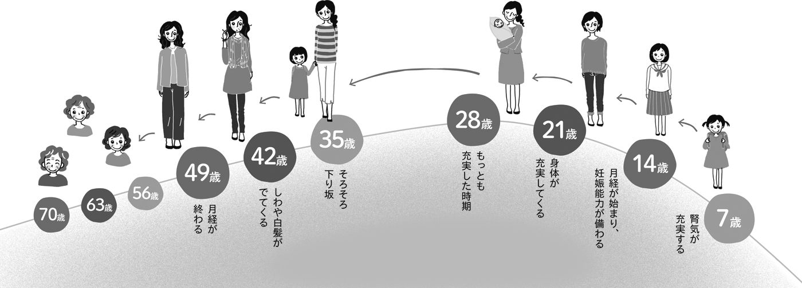
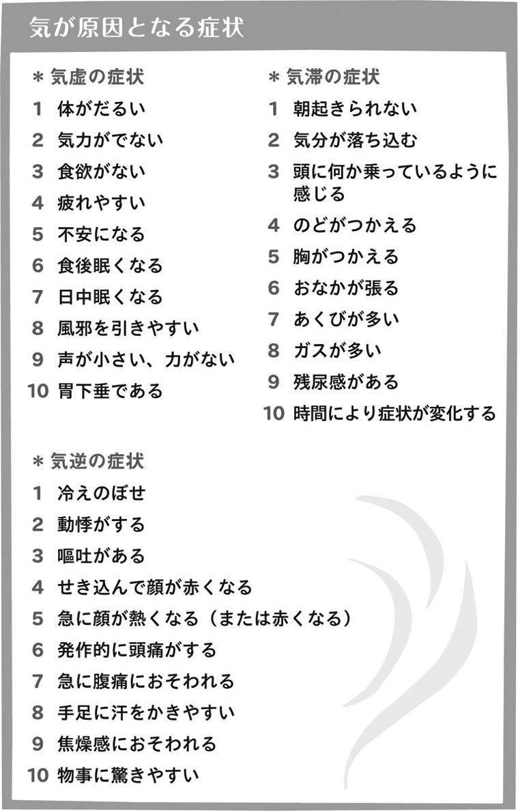

| 女性の不調は漢方でスッキリ! (1) [基本知識と食養生] アトピー、PMS、ダイエット、冷え性、むくみ、更年期障害、便秘などを改善する impress QuickBooks | |
| 矢久保 修嗣 & 木下 優子 & 上田 ゆき子 | |
| (2015) | |
はじめに
人は、なぜ病気になるのでしょうか？
多くの人は、病気になる前に、「なんとなく体調が悪かった」「眠れない日が続いていた」など〝前兆となる不調〟を感じていることが多いようです。
漢方には、「未病を治す」という言葉があります。不調をそのままにして病気になる前に、生体のバランスが崩れているところを見つけ出し、治してしまおうという考え方です。現代社会では、病気の早期発見が重要視されていますが、それより、もっと早く見つけて治してしまおうというのです。病気になるよりは、なる前に治してしまったほうがいいですよね。
そこで大切になってくるのが、養生という考え方です。養生とは、日常生活の過ごし方の知恵とでも言ったらよいでしょうか。多くの伝統医学で古くから大切にされており、日常を正しく過ごすことで健やかに長生きできるというものです。
漢方薬は穏やかに作用すると言いますが、そうは言っても薬ですから、副作用があります。その点、養生は日常生活上の注意ですので、それで健康をとりもどすことができれば、副作用なく元気になれるというわけです。この本は、病気に対する基礎知識ももちろんですが、同時に養生法についても知っていただきたいと思ってつくりました。
女性は毎月生理があり、妊娠・出産、閉経など、ホルモンの荒波にさらされる一生といっても過言ではありません。そのために、女性特有の疾患や症状が数多くあります。そのうえ、近年、女性は社会進出や家族構造の変化により、多くのストレスを抱えるようになりました。食生活の変化やクーラーの発達のために、冷え症に悩まされる人も増えてきました。病気というほどでなくても、不調だという人は多いのではないでしょうか。
「生理で具合が悪いのは仕方ない」「ストレスがあるから、多少の頭痛や胃の不快感は仕方ない」とがまんしてしまっていることはありませんか？
最初にも書いたように、病気とはいえなくても体調が悪いのは、病気の前兆かも知れません。一度は医療機関で受診することをおすすめします。
でも、異常が見つからなかったら？ そんなときに、漢方の知恵を思い出していただきたいのです。
本書では、それぞれの症状や病気に対して、西洋医学的な考え方と漢方医学的な考え方を載せてあります。ぜひ、両方見比べてみて、自分自身に合った治療や養生法を見つけてほしいと思います。
また、肌荒れや目のクマなど、女性が悩んでいる美しさへのアドバイスも入れてみました。あきらめる前に、〝元気で楽しく、美しく！〟をめざしてみませんか？
この本が、皆さんの楽しくて健康的な生活の手助けとなるよう心から祈っています。
２０１３年11月
もくじ
漢方は女性に向いている？
＊未病のサインを見逃しません
＊漢方は女性に向いています
＊西洋医学は、具体的な病気をピンポイントに治療します
＊漢方医学は、具体的な病気が見つからなくても、自覚症状があれば治療します
＊胃病同治の漢方薬
＊副作用が少ない？
＊心と身体を一体として考えている漢方医学
＊「漢方」と呼ばれるようになったのは江戸時代
＊日本の国土や民族性に合わせて発展した漢方
＊日々、変化の波にさらされている女性
＊女性特有の処方は７歳から？
＊健康に過ごすための考え方、養生
気の働き（＊気滞／＊気虚／＊気逆）
血の働き（＊血虚／＊瘀血）
水の働き（＊水毒）
＊肝・胆／＊心・小腸／＊脾・胃／＊肺・大腸／＊腎・膀胱／＊三焦
＊望診／＊聞診／＊問診／＊切診
＊湯剤／＊散剤／＊丸剤／＊漢方エキス剤
＊冷たくして飲む漢方薬もあります
＊良薬は口にうまし？
＊子どもが漢方薬を飲みたがらないときは？
＊漢方薬は食前に飲むもの？
＊副作用はある？
いつ、何を、どう食べる？
＊不調が出やすい季節の変わり目〝土用〟
＊土用は胃腸を大切に
＊不調があらわれる、一つ前の季節が鍵
＊食べ物が体を温めたり冷やしたりする作用〝食性〟
＊〝五味〟と季節、五臓六腑の関係性
＊上半身にあらわれる症状に注意／
＊対応策／＊おすすめの食べ物
＊夏バテと冷房病に注意／＊対応策／
＊おすすめの食べ物
＊乾燥と冷えに注意／＊対応策／
＊おすすめの食べ物
＊とにもかくにも、冷えに注意／＊対応策／
＊おすすめの食べ物
＊個々の体質や体調、季節に適した食事を選びましょう
＊栄養学的によい食べ物と、自分に合う食べ物は違います
＊食べ物のイン・アウトのバランスをととのえましょう
＊胃腸を休める時間をつくりましょう
＊消化に必要な唾液の力
＊消化液が薄まらないように
＊白砂糖のとりすぎで〝現代型栄養失調〟？
＊甘みを感じにくい清涼飲料水
＊白砂糖の代わりの調味料〝みりん〟
＊食材の甘味を引き出す〝塩〟
＊水以上に、白砂糖が水毒の原因になっている
＊甘いものは〝３日に１回ルール〟
＊体を温める食べ物を選びましょう
＊水毒にならないようにしながら水分をとりましょう
＊食養生と薬膳の違い
＊穀物は、体に悪さをしません
＊肉、魚、旬の野菜をバランスよく
＊食事日記で食生活を軌道修正
＊運動と入浴で汗をかく重要性
＊運動は、量より継続
＊気、血、水、タイプで異なるおすすめの食べ物
１章
漢方は女性に向いている？
健診で異常なし。
でも、その自覚症状が漢方では重要です
＊未病のサインを見逃しません
「いつも手足が冷えています」「むくみで夕方になると、毎日脚がパンパンです」「月経痛がひどくて......」。このような症状で困っている人は多いのではないでしょうか。
しかし、健康診断を受けたり、病院を受診したりしても、とくに具体的な病気は見つからず、健診で〝異常なし〟と判断されたり、医師に「様子を診ましょう」と言われることは多々あります。
これは、西洋医学の視点で言うと〝具体的な病気があるわけではないので、そのまま治療をせずに様子を診ましょう〟という判断になるためです。つまり、病気の進行や変化などによって、〝検査で病名の診断ができるまで何もしないで待っていましょう〟ということです。
一方の漢方は、この自覚症状がある段階を、病気になる前の「未病」と言われる、とても重要なサインと捉えています。そして、この段階から、症状を改善させるための治療を始めます。
＊漢方は女性に向いています
たとえば、冷えがひどく、落ちついて椅子に座っていることもままならない、という状態が続いていたとしても、具体的な病気がなければ、健康診断で異常が見つかることはありません。
しかし、実際に冷えの自覚症状に悩んでいる女性は多く、冷えは多くの体の不調の原因になっています。また、いろいろな病気の前兆である場合もあります。この段階で治療を始める漢方は、冷え症に悩む女性にとって非常に有効です。
そもそも、女性は小さな不調があらわれやすいのです。これは、女性が特有の性の周期をもっていることも原因となっています。
一つは、女性ホルモンのエストロゲン（卵胞ホルモン）、プロゲステロン（黄体ホルモン）の働きによるものです。このホルモンバランスのわずかな乱れが、冷え、月経障害、浮腫、イライラ、動悸、ほてりなどのいろいろな症状を発生させます。
もう一つは、自律神経の問題です。私たちの体は、気温の変化やストレスなどの刺激に対して、体の機能が正常に保たれるように働きます。この働きが自律神経です。自律神経には、交感神経と副交感神経の二つがあって、そのバランスが崩れると、めまい、だるさ、イライラ、頭痛、不眠、不安感などの症状があらわれることがあります。
とくに、女性は一般的に繊細なので、そのバランスが男性よりも崩れやすい傾向にあります。また、ホルモンやストレスの影響によって自律神経に問題を起こすこともあります。
これに加えて、感情、精神、心の問題もあります。この感情、精神、心の問題が自律神経系にも作用して、障害を発症することもあります。いわゆる、自律神経失調症と呼ばれるものです。
検査をしても、その症状を裏づける異常は見つかりません。しかし、明らかに不調があらわれ、日常生活に困っている人がいます。
漢方では、こうした未病の状態から対処をスタートさせ、症状を緩和し、生活の質を高めていきます。
西洋医学と漢方医学の違い
＊西洋医学は、具体的な病気をピンポイントに治療します
ここでは、西洋医学と漢方医学の違いについて説明したいと思います。
現在、私たちが受けている医療は、「科学的な根拠にもとづいた医療（ＥＢＭ）」と言われ、臨床研究や統計をもとに治療を選択するいわゆる西洋医学です。
さまざまな検査によって病気を見つけ、治療方法の選択を行います。
たとえば、単純レントゲン検査やＣＴ検査などの画像検査や、尿や血液などの検体を用いた生理検査などさまざまな検査があります。
こうした検査によって、病気のある器官・臓器を特定して、合理的に治療法を選択し、症状に対してピンポイントに治療していきます。その治療法は、医学的なエビデンスから有効と判断され、まとめられたガイドラインをもとに行われます。
また、西洋医学で使用される薬は、精製されたほぼ単一の有効成分でつくられています。西洋薬の特徴としては、痛みには鎮痛薬、不安感には抗不安薬、むくみには利尿剤というように、一つの病気に対して、その病気に効く治療薬が一つずつ処方されます。頭痛と熱があり、のどにも痛みがあるときに、２、３種類の薬を処方されることがあるのはこのためです。
＊漢方医学は、具体的な病気が見つからなくても、自覚症状があれば治療します
一方の漢方医学では、具体的な病気には至っていないけれど、月経痛や頭痛などの症状がある段階でも治療をしていきます。病気の原因が特定できないものや、病気としては認知されない、いわゆる〝未病〟の状態で治療を始めるのです。
具体的な病気ではないのに、漢方医は何を診ているのかと言うと、一つは症状です。そしてもう一つ、症状と同じくらい重視されるのが個人の体質や特徴です。
たとえば、冷え症と言っても、全身が冷える人もいれば、下半身だけが冷える人もいます。また、全身が冷えるという場合でも、体つきがしっかりしている人と、華奢な人とでは区別します。同じ症状の人が二人いたとしても、体質や特徴、生活環境やストレスの状態でも区別します。このように、同じ症状でも、治療方法が異なることを「同病異治」と呼んでいます。

＊異病同治の漢方薬
治療に用いられるのは漢方薬です。
漢方薬は、天然の鉱物や動植物を、一定の割合で混合してつくられています。漢方薬に用いる鉱物や動植物のことを生薬と呼んでおり、それぞれにいろいろな有効成分があって、この生薬を各種組み合わせることで、漢方薬として効果を発揮します。
西洋薬と異なる点は、一つの漢方薬に、複数の成分が含まれているので、いろいろな症状に対して効果が期待できることです。
このように、一つの漢方薬でも、さまざま症状に対する治療が可能だという考え方を、「異病同治」と呼んでいます。どういうことかと言うと、冷えの治療薬と婦人科系の治療薬が同じであるなど、複数の症状に対して同じ漢方薬が使えるのです。
＊副作用が少ない？
また、漢方薬は、西洋薬に比べて副作用が少ないと言われています。しかし、あくまでも少ないだけで、漢方薬も、食欲不振、むかつきなど、さまざまな副作用が生じる場合があります。原因は、たとえば、漢方薬に含まれている成分が合わなかったり、自分の症状に合っていない場合などです。
処方された漢方薬が合わないと感じたら、西洋薬も同様ですが、すぐに医師に相談してください。
＊心と身体を一体として考えている漢方医学
漢方医学では、〝心〟と〝身体〟は一体だと考えています。
たとえば、〝心の問題によって、身体に不調が生じる〟こともありますし、〝身体の問題によって、心の不調が生じる〟こともあります。ホルモン、自律神経、感情、精神、心などの生体機能のバランスが崩れることによって、いろいろな不調があらわれると考えているため、心と身体のバランスをととのえることを重視し、全体の調和を図ることを治療の目的としています。
これは、西洋医学が心臓や肝臓などの部分ごとに診ていくことに対して、漢方医学が、心や感情、心臓や肝臓などの臓器すべてを含めて一つの存在だと考えているもので〝全人的医療〟と呼んでいます。
漢方医学は、「先人たちの治療経験を集積する方法の中から生まれた経験的な医学」「漢方は、２０００年間の臨床研究の集大成である」とも言われ、長い歴史があります。２０００年もの間、研究されていたことから、薬の効果や副作用に関して充分な時間を費やすことができたのです。
どちらがよい悪いというわけではなく、それぞれに特徴があるので、症状や病気に応じて、どのような治療をしたらよいかを選択することが大切です。そのためには、不調を感じたときに、そのままにせず、病院を受診してみることです。
そして、もしも「異常なし」と言われても、不調が続くようなときには、漢方医学を専門としている医師を受診してみることをぜひおすすめします。
市販の漢方薬の箱に書かれている症状と自覚症状が一致しているからといって、薬局で買った薬を服用する人もいると思いますが、どの薬を飲んだらよいかを一般の人が判断するのは難しいものです。
まずは、受診です。小さな不調であっても、いずれ症状が悪化する可能性もあります。大きな病気に繋がる〝未病〟のサインを見過ごさないことが大切です。
漢方医学と中医学の違い
＊「漢方」と呼ばれるようになったのは江戸時代
街を歩いていると漢方、中医学、東洋医学など、さまざまな呼び方のクリニックやマッサージ店などを目にしますが、それらの違いをご存知でしょうか。
おおまかに言うと、〝漢方〟は、古代中国で生まれた医学が、古墳時代から飛鳥時代（５～６世紀）に日本に伝わって、日本の国土や民族性に合わせて発展した医学です。
しかし、日本で実際に「漢方」と呼ばれるようになったのは、江戸時代のことです。江戸時代にオランダ医学が入ってきたため、オランダ（阿蘭陀）の〝蘭方〟に対して、それまでの医学を、中国の漢の時代に由来する「漢方」と呼んで区別するようになったのです。
一方の〝中医学〟は、現在の中国で行われている伝統医学のことです。〝東洋医学〟はもっと範囲が広く、漢方や中医学、また韓国で行われている韓医学などを含んだ、西洋医学に対する名称です。
＊日本の国土や民族性に合わせて発展した漢方
古代中国で生まれた医学が日本に中国から伝わってきたのは古墳時代から飛鳥時代のこと。このとき、漢方薬や生薬、医学の本が持ち込まれました。奈良時代になると、唐招提寺で有名な鑑真和尚も中国の医学書を携えて日本にやってきたそうです。
平安時代には、中国から日本に伝わった医学を、丹波康頼という人が、日本における最古の医書として、『医心方』にまとめました。
漢方の診断や治療、薬の処方は、それ以降も明治維新に至るまで医師たちによって行われていました。その間に漢方は、中国大陸から伝わってきた医学のままではなく、日本の気候風土、日本人の民族性、体質や生活習慣が加味され、日本人向きで日本独自の医学として変化、発展したのです。
変化の過程で考慮されたのは、たとえば気候です。中国内陸部は寒暖の差が激しく、乾燥していますが、日本は、温暖で湿度が高い傾向にあります。そのため、湿気が体に入り込んでむくみやすくなる人のために、湿をとりのぞく成分が漢方薬の処方に多くとりいれられました。
また、食生活では、中華料理は脂質が多いけれど、日本はあっさりした和食が中心です。あっさりした食べ物を食べているということは、常に脂質を多くとっている中国人よりも胃腸が強くないことをあらわします。そこで、胃を保護する成分が漢方薬に多く使われたのです。
そのほか、中国は大陸で、民族の交流がさかんですが、日本は島国のため、他民族との遺伝子交換がさほど多くありません。このような違いが反映されながら、現在の漢方の形に近づいていったのです。
変化する７年ごとの女性のサイクル
＊日々、変化の波にさらされている女性
一年に四季があるように、人にもリズムがあります。とくに女性には、初経から閉経を迎えるまでの大きなリズムと、毎月の月経というリズムがあります。
このリズムは、ホルモンの作用によって、波打つように変化していきます。女性は毎月、ホルモンの大きな波にさらされながら生活しているのです。その分、女性は男性よりも、ケアが必要だと言えるでしょう。
１８００年ほど前に書かれた、現存する中国最古の医学書『黄帝内経』では、人間のライフサイクルを、男性は８年、女性は下の図のように７年で変化すると説明しています。
７歳の〝腎気〟の腎とは、五臓（肝、心、脾、肺、腎）の一つです。五臓は、漢方医学独特の概念の一つで、西洋医学で言うところの肺、腎臓などと働きは似ていますが、同じではありません。簡単に言うと、西洋医学の肺や腎臓よりも、漢方の肺や腎臓のほうが、広い意味と役割を含んでいます。
『黄帝内経』の中で、この腎は、〝先天の気を司り、成長発育や生殖を担うところ〟だとあります。先天の気とは、生まれつき持っている生体を巡っているエネルギーのことです。
女性は、７歳になると腎気が充実して、７年後の14歳になると、女性として成長すると考えられていました。ちょうど初潮が来る頃です。
さらに女性として輝き、年齢を重ね、28歳を境に、腎気はゆるやかに衰えて、やがて閉経を迎えます。
１８００年も前に書かれたことですが、現在に置きかえてみるとどうでしょう。
現在の女性は、14歳よりも少し若くして初潮を迎える人が多いと思います。一方、閉経を迎える年齢は、現在のほうが少し遅くなっています。しかし、若干の年齢のずれはあるものの、おおむね、今も通用するものだと思います。
閉経前後になると、腎気の減少によって、多くの人には、更年期障害症候群と言われる一連の症状があらわれます。また、腎気の衰えが進む腎虚になると、腰痛や夜間頻尿、性欲減退、めまい・耳鳴り、視力聴力の低下、毛髪の脱落など、老化症状と言われるさまざまな症状があらわれます。
漢方では、このような変化に対するものとして、漢方薬による治療と、それぞれの時期に合わせて生活習慣を注意することで、生体のバランスをとりもどし、健康に過ごすための養生という考え方があります。
日常をよく過ごすことで、その人の健康が保たれるというもので、現在の生活習慣病を改善する考え方とも共通するところがあります。

＊女性特有の処方は７歳から？
漢方薬は、自覚症状や体質によって処方されます。男性、女性によっても処方が異なる場合もあり、とくに、初潮を迎える頃からは、異なります。
そもそも人は、どこから、女性と男性に分かれるのでしょうか？ こんなふうに聞かれたら、遺伝的には、出生前から決まっていると思うでしょう。
しかし、人は７歳までは魂魄が定まらない、つまり、男性か女性かが定まらないと考えられていた時代もあります。
たとえば、漢方医学では、初経前までの子どもの時期は、男の子も女の子も、処方する薬にあまり違いはありません。おなかの虚弱な子には、男女問わず小建中湯という漢方薬などが処方されます。高齢者に対しても同様で、男性にも女性にも、エイジングケアの処方である牛車腎気丸や新陳代謝をよくする真武湯などが用いられます。
これに対して、月経がある時期の女性に対しては、女性特有の処方やケアがあります。
冷え、月経前緊張症（ＰＭＳ）などに用いられていて、「女性の三大処方」と言われている、当帰芍薬散、加味逍遥散、桂枝茯苓丸です。
また、女神散と言う、まさに女性のための処方もあります。この女神散は、体のエネルギーである、気と血の巡りを改善する処方で、月経前緊張症から産後の神経症まで、メンタルな症状を伴う女性の疾患によく使われているものです。
＊健康に過ごすための考え方、養生
養生の基本は、中庸です。何事にも、節度を守って行動すべきであると言うもので、『黄帝内経』の中には、その過ごし方が残されています。
たとえば、〝春であれば、万物みな萌ゆる時期であり、夜更かししてもかまわないが、朝は早く起きる。そして、朝は散歩して、体をのんびりと動かし、自然界の陽気をとりこんで体内の陽気を育てる〟といった内容です。
現在でも、養生を重視したケアは大切で、その基本は、ごくあたりまえのことばかりです。
食事は、食べ過ぎや飲み過ぎに要注意。
和食中心のシンプルな食材をよく噛んで食べる。
適度に体を動かすことを心がけ、
衣服は、シンプルなものを身につける。
住居は、四季を感じて過ごせるように心がけ、
冷暖房のかけすぎに注意する。
そしてなにより、のんびり、ゆったり過ごす。
漢方医学では、１０００年以上前の書物にも、女性専門の項目がありました。性差医療のさきがけとも言えるでしょう。現在は、女性の社会進出も進み、昔は見られなかった症状も見られるようになってきました。しかし、月経があって、女性としてのサイクルがあるということは変わっていません。
西洋医学の進歩は目を見張るものがあり、現在の医学は非常に優秀です。その一方で、伝統医学である漢方にも、長い時間にわたって蓄積された役立つ知識や治療がたくさんあります。両方のよいところをうまくとりいれて、より健康で、楽しい生活をめざしてみませんか？
気、血、水の働き
漢方では、診察の際に患者さんの症状を診るとともに、体の中のバランスの崩れているところを探していきます。その際の指標はいくつかありますが、なかでも重視しているのが〝気、血、水〟と〝五臓六腑〟です。
気、血、水とは、体の中にある血液や体液などを３つに分けた考えを基にしているものです。
気は、いわゆる元気、気力などのことで、実際に目に見えるわけではありませんが、身体のエネルギーで、重要な役割をしています。血は、血液とその働きのことで、体の栄養状態に関係しています。水は、血液以外の体液とその働きをあらわしています。
このバランスが崩れると不調が起こります。また、病気がある人は、気、血、水のバランスをととのえると、病気の回復が早まる可能性が高まります。
気の働き
気は、目に見えないエネルギーのことで、全身を巡り流れて、さまざまな働きをしています。
この気には〝先天の気〟と〝後天の気〟の二つがあります。先天の気は、生まれつき持っているエネルギーのことで、後天の気は、日々の呼吸や食べ物の消化活動からとりいれられ、肺や脾でつくられます。いずれも、臓器で言うと腎がコントロールしています。
この気の流れが滞ったり、不足したりすると私たちの体に不調が生じます。その症状は、次の三つに分けられます。
＊気滞
気の流れが滞っている状態を気滞と言います。滞っていると言っても全く動かなくなるわけではなく、時間や日によって動き方も症状も変化します。そのため、病院に行ってみても、医師に「どこも悪いところはありません」と言われるなど、いわゆる不定愁訴だと思われることも少なくありません。
気滞の症状は、気が滞っているときにあらわれます。具体的には、手足や頭が重くなったり、気分が優れなくなります。気分も沈みがちになり、いろいろなことをするのが億劫になることもあります。また、ストレスがかかると気滞になりやすくなります。気は、ストレスの影響をとても受けやすいのです。直結していると言ってもよいでしょう。
たとえば、職場やプライベートで何かショックを受けるようなことがあったり、ミスをしたり、人間関係でのトラブルなどでも、気滞になります。
また、気は血や水を巡らせる仕事もしているので、気が停滞すると、血や水の巡りも悪くなって、体にさまざまな不調があらわれます。
気、血、水は、それぞれがバランスよく働いている状態がよいのですが、とくに気は、すべてに関係しているのです。
ただし、気の流れは身体を動かすことでよくなるので、軽度の気滞であれば、運動することである程度改善します。
＊気虚
気が不足している状態が気虚です。気が足りなくなると、私たちは、いわゆる元気がない状態、ぐったりした状態になります。
また、食欲がなくなったり、食事を味気ないと感じることもあります。食後には、疲れやすいと感じたり、強い睡魔におそわれることも多いようです。
このほか、病気になって気が消耗しても、気虚の状態になります。こうなると、私たちの体は病気と闘う力がなくなって、風邪を引きやすくなったり、病気になりやすくなるので、早めの対応が必要です。
＊気逆
更年期障害症候群であらわれる症状にとても近いのが、この気逆の症状です。
気は、通常、体の中を上から下、中枢から末梢に向かって流れていますが、この気の流れが乱れて、逆流している状態です。
たとえば、怒ったり興奮したりして、カーッと頭に血がのぼり、顔が真っ赤になったことがあると思います。こんなときは、気が上に向かっています。
このとき体は、動悸を感じたり、イライラしたりします。動悸は胸だけでなく、イメージしにくい方もいるかもしれませんが、おなかで感じる場合もあります。感覚としては、おへそからみぞおちにかけて、つきあげてくるような動悸です。
また、手足は冷たいのに頭がのぼせる〝冷えのぼせ〟も気逆の症状です。頭に血がのぼり、傍目にもわかるほど顔が赤くなる一方で、下半身は下から冷気が立ち上ってくるかのように冷えたりします。ひどくなると、手足のしびれる感じを訴える人もいます。

血の働き
血は、血液と、血液のような働きをするものです。脈管内を通って全身を巡り、栄養を与えています。
女性の病気や症状に大きく関わっていて、そのほとんどに、血の異常が関わっていると言っても過言ではありません。血が不足したり、流れが滞ったりして、それが私たちの体に悪影響を与えると、不調としてあらわれます。その症状は、血虚と瘀血の二つに分けられます。
＊血虚
血が足りない、あるいはうまく働いていない状態が血虚です。代表的な症状は貧血で、顔色が青白くなったり、全身にだるさが出たりします。
また、血は全身を巡って栄養となっているので、血虚になると栄養状態が悪くなり、肌の乾燥、爪が割れやすい、髪の毛がボサボサになる、枝毛が増えるといった症状があらわれるようになります。
＊瘀血
血がうまく巡らずに、停滞している状態が瘀血です。わかりやすい瘀血の症状には、骨折や打撲があります。女性が悩む目のクマも瘀血の一種です。
女性特有の病気にも、瘀血が関係していることが多く、子宮筋腫や子宮内膜症、月経困難症も瘀血が原因の場合が多いのです。
最近、瘀血の状態の女性が増えていると言われています。なぜでしょうか？
瘀血は血の滞りです。さまざまな原因がありますが、運動不足や、欧米化した食生活の変化、ストレスなどで増悪すると言われています。また、頭痛や肩こりにも関連している場合があります。
水の働き
水は、血液以外で、体の中にある無色の液体（汗、リンパ液など）とその働きのことです。水の巡りが悪くなったり、体の中で水が多すぎたり、不足したり、バランスが崩れたりした状態を水毒といいます。
＊水毒
体の中の水分のバランスが崩れている状態です。実際には、水分が過剰になっている場合と、不足している場合がありますが、主に、水分の過剰な状態をさす場合が多く、水が滞っている場所によって症状が変化します。
たとえば、水が手足にたまるとむくみになります。めまいやアレルギー性鼻炎にも関連があります。
自覚症状としては、のどが渇きやすかったり、お手洗いに行く回数が人より少ないと感じている人は、水毒の可能性が考えられます。気、血、水の中で、日本人に一番多いのが水毒だと言われています。これは、湿度の高さや、もともと日本人が水分の多い食べ物を好む傾向にあることが原因だとされています。
とくに、女性は男性よりも水をためこみやすい傾向にあります。これは、女性のほうが、筋肉量が少ないので、体の中に溜まった水を、筋肉のポンプの力で流すことが苦手なためです。
それに加えて、現代の人は快適な温度の室内で過ごすことが多く、運動不足のため、汗をたくさんかく環境にありません。このことが、余分な水分を出せない状態になっている原因です。
水の流れが悪いと、血の流れも悪くなります。こうして相互に関係し合いながら、症状が悪化していくのです。
五臓六腑の働き
「五臓六腑にしみわたる」と言う言葉がありますが、この五臓六腑は、私たちの体の中で、とても重要な役割をしています。
五臓とは、肝・心・脾・肺・腎をあらわします。六腑は、胃・小腸・大腸・胆・膀胱・三焦をあらわします。
ここで言う五臓六腑は、漢方の視点からみたもので、たとえば、肝や心は、西洋医学でいう肝臓や心臓とは異なります。
肺のように、同じ名称が出てくるうえ、働きも似ている場合があるのでわかりづらいと思いますが、漢方の五臓六腑を簡単に言うと、五臓の肝や心は、西洋医学でいう肝臓や心臓などの臓器よりも広い意味と役割を含んでいます。
なお、この五臓と六腑は、それぞれ密接に関係し合っています。次の表をご覧ください。肝と胆、心と小腸、脾と胃、肺と大腸、腎と膀胱はペアのような関係性で働いているのです。
そのイメージを形にしたのが、次の五角形の図です。そして、肝と心、心と脾など隣同士に位置している場合や、肝と脾、脾と腎など向かい合わせの位置にあるものが、互いに影響し合っているといわれています。
この五臓六腑は、とても複雑な働きをしていて、季節、感情や食べ物とも密接な関係を持っています。季節や食べ物との関係性については、食養生の項目で説明しますので、ここでは、主に、五臓六腑のそれぞれの役割や、そこに関係していると言われている感情について説明していきたいと思います。
■感情、季節も〝五臓六腑〟と繋がっています
五臓と六腑は、相互に関係し合いながら、さまざまな働きをしています。そして、私たちの感情や、季節、とりいれる食べ物などにも関係しています。
たとえば、それまで穏やかに過ごしていたのに、急に怒りを感じて、頭に血がのぼり、目が充血したという経験はないでしょうか。
次の表をご覧いただくと、五臓の〝肝〟の二つ下の欄に〝目〟。三つ下の感情の欄に〝怒〟とあります。私たちが怒りを感じると、その怒りは肝や目に作用します。肝は、血を貯蔵するところであることから、血が頭にのぼるような動きをするのです。このように、五臓六腑と感情、季節は深く関係し合っています。なお食べ物との関わりについては、２章から紹介していますので、あわせてご覧ください。
肝・胆
＊肝
肝は、血を蓄えておくところであり、全身の気を巡らせるところです。そして、精神的な安定を保つところでもあります。ストレスがかかると、この気を巡らせる作用に影響が出やすくなり、そのためにイライラしたり、怒りっぽくなったり、憂鬱になったりします。皮肉な話ですが、肝は怒りの感情とリンクしていますので、腹を立てているとますますイライラするということが起こるのも肝の気の流れによるものです。
たかがストレス！ と思っていると、万病のもとになることもあります。〝イライラしているな〟〝怒りっぽいな〟と感じるときは、早めの気分転換を心がけましょう。気の巡りをよくするためには、身体を動かすのも効果的です。
また、消化機能の補助や胆汁分泌も担当しているので、げっぷや胃もたれが出るようになったり、おなかの具合が悪くなることもあります。
＊胆
胆は、肝でつくられた胆汁を貯蔵するところです。肝が不調になり、胆汁の分泌がうまくいかなくなると、消化不良が起こります。
また、胆は〝胆力〟という言葉にも象徴されるように、決断力や勇気を担当しています。胆は、肝と協力することによって、判断し、決断することができるようになります。胆が悪くなると、何かに怯えるようになったり、勇気をもって決断することができなくなってしまうのです。
〝なんだか物事を決められないなあ〟と思うときには肝や胆の働きが弱っている可能性があります。
ちなみに、食事のメニューが決められないのは、決断できないのではなく、いろいろ食べたいという迷いであることが多いので心配いりません。
心・小腸
＊心
心は、血の循環と精神活動を担当しています。血を巡らせ、全身の隅々まで栄養を運んでいます。そのため、心が傷害されると動悸がしたり、息切れがしたり、声に力がなくなったりします。
また、心は判断力や意識や思考力などすべての精神機能を司るセンターとしての役割を果たしているので、心がよい状態だと、落ちついた気持ちになり、思考力や判断力も研ぎ澄まされた状態になります。逆に状態が悪くなると、不安になったり、物事に驚いたり、怯えやすくなります。不眠や夢をよく見るといった症状もあらわれるようになります。
考えがまとまらない、判断力がにぶっていると思ったときは、休みどきなのです。睡眠不足は、心を悪くする要因の一つなので、しっかり休養をとってあげることが重要です。
また、心は舌とも密接な関係があるので、舌の先が痛い、舌の先が赤くなるといった症状が出たときには要注意です。
＊小腸
小腸は、胃から消化された食べ物を受けとり、そこから必要な気と不要なかすに分けます。必要な気は取りだして脾に送り、残りのかすは、排泄するために大腸へ送ります。
この働きが悪くなると下痢や、腹痛、おなかがゴロゴロするといった症状に繋がります。
小腸の働きは、脾でコントロールされているので、不調を感じるときは、脾をいたわることが重要です。
脾・胃
＊脾
脾は、胃や小腸と協力して食べ物からエネルギーを吸収する〝食に関するコントロールセンター〟です。そのため、脾がやられると、食欲不振、食後の倦怠感、おなかのもたれ感などに繋がります。
脾の不調は気の吸収と密接に繋がりがあるので、放っておくと気虚になり、身体がだるくなったり、疲れやすくなったりします。
また、味覚の変化や口が粘るといった症状に繋がりますし、悪化すると舌の苔が厚くなってきます。お口の状態が、いつもと違うと感じるようなら注意が必要です。このほか、生理がだらだら続く症状も脾の不調が原因のことがあります。
このような症状を防ぐためには、日頃から脾をいたわっておくことが大切です。脾をいたわるためには、まず胃の状態をよくする必要があり、そのためには食養生が大切です。
胃実脾虚という言葉もあります。これは胃腸が丈夫であるがゆえに食べ過ぎたりして、脾に負担がかかってしまうことを意味しています。暴飲暴食は控えて、適度な食生活を送るようにしましょう。
＊胃
胃は体の中で最初の消化を行い、食べ物を小腸に送ります。そのため、うまく消化できなかったり、うまく小腸に送れなかったりすると、胃部の張りや不快感、むかむかするといった症状に繋がります。
胃の負担を減らすためには、胃に入る食べ物の状態をよくしておくことが有効です。消化をよくするためには〝食べ過ぎない〟〝飲み物は冷たい状態で飲まない〟〝よく噛んで食べる〟といったことが有効です。腹も身の内ですから、毎日でなくても、気づいたときには実行して、胃腸をいたわってあげましょう。
肺・大腸
＊肺
肺は、呼吸を司っています。漢方では〝呼吸は気〟だと考えていて、単に酸素が出入りするというだけでなく、外界からエネルギーをとりこみ、それを食べ物から得たエネルギーと合わせて気をつくるもとにしているのです。そして、この呼吸こそが生命維持のもとだと考えています。
肺は臓器の中で一番上にあり、外の空気と直接触れる場所です。ここから気をとりこみ、皮膚をはじめ全身に送ります。
肺の状態がよければ、皮膚もみずみずしく、外界からの攻撃に対して抵抗力もある状態になります。逆に肺の状態が悪くなると、皮膚が乾燥したり、汗をかかなくなったりしますし、疲れやすい、風邪を引きやすいなどの症状が出てきます。
外来で、「深呼吸をしてください」とお願いするとできない人がいます。
このような人は、肺が傷害されていることが多いのです。ときどきは深呼吸して、身体の中によい気をたくさんとりいれてください。できれば森や公園など、緑の多いところで呼吸するのが効果的です。
＊大腸
大腸は、小腸で分けられた食物のかすの中の水分を吸収して、残りを大便として排泄します。大腸の働きが悪くなると、腹痛、便秘や下痢があらわれるようになります。
腎・膀胱
＊腎
腎は、私たちの発育や生殖、排尿などの水の流れに関することをコントロールしています。これに加えて両親から受け継いだ気を、食べ物から得たエネルギーとあわせて〝精〟として蓄えています。精とは、生命力、精力などをイメージしてください。これが充実すると成長し、衰えると老化します。子どもの成長発育や、生理が来たり、妊娠できるようになるのも腎の働きによるものです。
また、エイジングとも密接な関係があります。腎が衰えると、生殖機能の低下や、骨がもろくなる、腰が曲がる、足腰が衰える、肌の老化、白髪や抜け毛、聴力が低下するなどの症状に繋がります。
若い頃は精がたくさん蓄えられます。しかし、この時期に過激なダイエットをしたり、不摂生であったりすると、精が形成されなかったり、ひどいときには精を消耗してしまうことがあるので、その後、不妊や早期の閉経、白髪の増加、髪の毛が抜けるといった症状に繋がります。若い頃から健康的な生活を心がけ、無理なダイエットなどをしないようにすることが大切です。
＊膀胱
膀胱は、尿を蓄え、その働きは腎によってコントロールされています。頻尿や尿漏れなどの症状のあらわれは、腎や膀胱の不調によるものです。
＊三焦
三焦は、気や水の通り道です。この働きは、肝によってコントロールされています。五臓六腑と違って、三焦の存在は、具体的なものではなく、通り道であり、また、各臓器の機能を調整したり、補佐したりする働きもしています。
コラム■漢方のもととなった三大古典
日本の漢方の原典『黄帝内経』
中国の伝統医学〝中医学〟や、韓国で発展した〝韓医学〟などを総称する東アジアの伝統医学は、約２０００年前の古代中国でまとめられたと言われています。なかでも、三代古典と呼ばれているのが、『黄帝内経』『神農本草経』『傷寒論』です。
『黄帝内経』は、現存する医学書としては中国最古で、東アジアの伝統医学の原典、バイブルとも言われています。
東アジアの伝統医学における基本的な概念や治療法をまとめたもので、たとえば、男性は８歳ずつ、女性は７歳ずつ成長するといった考え方や、この世のありとあらゆるものは、陰と陽の二つに分類され、互いに対立しながらバランスを取り合って存在しているという〝陰陽説〟、すべてのものは、木火土金水から成っているという〝五行説〟などの考え方を紹介しています。
生薬の性質がまとめられている『神農本草経』
『神農本草経』は、東アジアの伝統医学で用いられる生薬などを分類したもので、定かではありませんが１～２世紀頃に完成したといわれています。
〝神農〟とは、古代中国の神のことで、草木の薬効を調べるために草の根や木の皮をなめて、その薬効を調べたと言われています。『神農本草経』は、神農が直接まとめたものではありませんが、こうした伝説にあやかって書名がつけられたと推測されています。
この本では、３６５種の生薬を性質ごとに上品・中品・下品の三品に分類して紹介しています。
上品は、体に無毒で、長期間、服用ができ、生体の機能を向上させる養命薬としての位置づけです。
中品は、毒性もあるけれど、有効な治療薬にもなり得る養生薬としての役割です。
下品は、治療薬としての作用は強いけれど、毒性が強いので、長期の服用は不可能な治病薬となっています。
葛根湯も紹介されている『傷寒論』
『傷寒論』は、著者、著作年代ともに不明ですが、前漢（前２０６～後８）末頃にはすでに存在していたようです。
後漢（25～２２０年）の時代に、長沙というところの太守（長官）だった張仲景が、感染症で一族の多くを失い、その経験を記載した『傷寒雑病論』がもととなっていると言われています。
それが当時の、戦乱によって散逸したため、その後、集めて整理された『傷寒論』と『金匱要略』が現在に伝えられています。
『傷寒論』は、急に発熱する病気について、病期を６つのステージに分け、それぞれの病期の症状と治療方法などが記載されています。
『金匱要略』は、慢性の病気について記され、循環器系、呼吸器系、泌尿器系、消化器系などの障害や、皮膚科、婦人科、精神系疾患の治療方法が記載されています。
注目すべきは『傷寒論』で、おもに感染症に関して発症から終末まで、その時間の経過とともに変化していく病態が分析されている点です。
この分析結果から、ふさわしい治療の原則や治療薬、その応用が極めて簡明に紹介されています。よく知られている葛根湯も記載されています。
現代もよく使われている葛根湯の処方が、当時からすでにあったということは驚くべきことでもあります。

漢方の診察・診断の流れ
漢方医学では、それぞれの患者さんに最適な治療方法と漢方薬を選ぶために〝四診〟と呼ばれる四つの診断法、望診、聞診、問診、切診を行います。
＊望診
〝望診〟は、患者さんの顔色や表情、態度、姿勢、体型など、さまざまな外見を診ます。これは、西洋医学で行われている診察法である視診に相当します。視診では、重要なポイントとなる部位をじっくりと丁寧に観察していきます。
一方、漢方医学の望診では、患者さんをボーッと、あるいは軽く診ます。じっと集中して観察するのではなく、一瞬に患者さんの気配を感じるのです。このあたりは医師の感性がかなり重要ですが、ここで患者さんの状態を把握していきます。
望診に加えて舌を診る〝舌診〟も行います。
患者さんに舌を軽く出してもらい、舌の色、大きさ、形を短時間でしっかり観察します。舌の表面を覆っている舌苔も診ます。色、厚さ、分布などです。
次に、患者さんに舌の先端を上顎につけるようにして口を開けてもらいます。こうして、舌の裏側にある静脈の血管の色、太さ、広がりを観察します。
なお、この舌診は、診断において非常に重要な項目なので、望診とは分けて考えるという考え方もあります。
＊聞診
西洋医学では、聴診器を使って生体の発する音を聴く聴診という方法があります。心臓の音、肺や気管支の呼吸音、腹部の超雑音などを聴きます。
一方の漢方では、聞く診察法として聞診があります。声の大きさや声の高さ、話し方や応答の反応のしかた、咳や痰、呼吸音などを聞いていくのです。体臭や口臭などの臭いを嗅ぐこともあります。漢方医学の本によっては排泄物の臭いを嗅ぐなどとも書いてありますが、それは、現代ではほとんど行っていません。
＊問診
〝問診〟は、西洋医学で行われる問診とほぼ同じで、患者さんのこれまでにかかった病気、家族集積性のある病気や自覚症状を詳細に聞いていきます。
このほか、食べ物の好み、生活習慣、仕事、月経、どのような不安やストレスを感じているのかなど、広範囲に渡って聞き、患者さんの状態を把握していきます。このような事項は、漢方ではとても重要な情報になります。
＊切診
〝切診〟は、患者さんの身体に触れてその状態を診ます。西洋医学における触診に似ています。
西洋医学では、脈拍数や脈のリズムを診ます。患者さんに、おなかが痛いという症状があるときは、腹部の触診をします。
一方の漢方医学の切診には〝脈診〟と〝腹診〟があります。
脈診は、脈拍数やリズムだけでなく、脈の状態を診ます。脈診は、急性疾患の場合、その疾患の進み具合などについて推測することができます。
腹診は、日本独特の腹部を診る方法で、慢性疾患の診断には重要です。西洋医学で腹部を診るのは、腹痛など腹部に症状があるときです。
しかし、漢方医学ではあらゆる症状の際に腹診をします。たとえば、花粉症であろうが、喘息であろうが、不眠であろうが、腰痛でもです。この腹診では、腹部の軽い緊張や抵抗感が診断のポイントになります。
漢方医学では、以上のような四診という診察から診断をしていきます。
なお、すべての医師が、この四診を行うとは限りません。一般的な診療のみ行う場合もあります。
漢方薬の飲み方
漢方薬の名前には、葛根湯、当帰芍薬散、八味地黄丸のように、～湯、～散、～丸とついているものがあります。これは、漢方薬の剤形をあらわしています。それぞれ、湯剤、散剤、丸剤と言い、漢方薬は、剤形によって、その飲み方が異なることがあります。
＊湯剤
〝湯剤〟は、刻んだ生薬を組み合わせたものを、30～60分間グツグツ煮てつくります。煮出して成分を抽出するもので、〝煎じ薬〟のことです。煎じるので手間がかかります。
本来、この煎じ薬は温かい状態で飲みます。このときの薬の味や香りが重要です。漢方では〝良薬は口にうまし〟といいます。患者さんに最適な漢方薬は、その患者さんにとっては美味しいと感じる場合がけっこうあるのです。
＊散剤
〝散剤〟は、生薬を粉末にして、混ぜあわせたものです。散剤には〝散ずるに通じ、急病を解散・分散させる〟という言葉があり、すぐに服用が可能で、速効性も期待できます。
飲むのは簡単で、煎じる手間も要らないのですが、薬の量が多くなるので、一度に服用するのが困難な場合もあります。この場合は、お湯やお水で少しずつ服用します。
＊丸剤
〝丸剤〟は、生薬を粉末にして混ぜ、ハチミツなどを加えて丸く練り固めたものです。丸剤には、〝緩に通じ、緩徐に病気を治す〟という言葉があり、薬効が緩やかで持続性もあると考えられています。また、ほかの剤形よりも長期保存ができます。丸剤もお湯やお水で服用します。
ところで、漢方薬には〝酒服〟といって、お湯のかわりに温めた日本酒で飲む方法もあります。たとえば、アンチエイジングや高齢者によく処方される八味地黄丸、冷えが強い人に処方される桂枝茯苓丸、婦人科系の病気に処方される当帰芍薬散などです。
これは、アルコールが、生薬の油脂成分を溶かし込んで吸収率をあげるのではないかと考えられています。また、アルコールの働きで、胃腸へのもたれを防ぐためとも言われています。
＊漢方エキス剤
現在、医療用として使われている漢方薬の多くはエキス剤です。エキス剤とは、生薬を煎じた液からエキス成分を抽出し製剤化したものです。
たとえば、煎じ薬が豆を粉に引いてお湯を注いで抽出するドリップコーヒーとするならば、エキス剤は粉末にお湯を注ぐだけで飲めるインスタントコーヒーといったところです。グツグツと煎じる手間がかからないし、服用も簡単です。携帯にも便利ですし、長期に保存することもできます。
このような漢方エキス剤を処方されたことのある方もいらっしゃるのではないでしょうか。皆さんは、どのようにして飲んでいますか？
エキス剤の名前に〝～湯〟とついているならば、その漢方薬はもともと煎じ薬。だから、煎じ薬と同じようにして飲むのが効果的です。
飲み方は、１００～１２０ くらいのお湯に溶かして服用します。あるいは、前記の量の水とエキス剤をコーヒーカップなどに入れて、電子レンジでチンします。必ずラップをしてください。ラップが面倒な場合は、温度を60℃に設定します。これなら吹きこぼれないでしょう。
くらいのお湯に溶かして服用します。あるいは、前記の量の水とエキス剤をコーヒーカップなどに入れて、電子レンジでチンします。必ずラップをしてください。ラップが面倒な場合は、温度を60℃に設定します。これなら吹きこぼれないでしょう。
なお、お湯に溶かしたエキス剤が、底に沈んでいたらこれもしっかり飲みましょう。エキス剤は、顆粒や細粒の剤形にするときに乳糖（牛などの乳に含まれている糖からつくった甘味料）を使っていて、これが底に沈殿していることがあるからです。ここにも薬の成分が含まれているので、必ず飲んでください。
とくに、冷え症や風邪の初期の人は、エキス剤をお湯に溶かして飲むことで体温が上げるのを助け、代謝を活発にし菌やウイルスへの抵抗力を上げます。
＊冷たくして飲む漢方薬もあります
漢方薬をお湯で飲むことをすすめてきましたが、例外的に冷たくして飲む場合もあります。ただし、エキス剤は冷たい水に溶けにくいので、少し手間ですが、熱いお湯で溶かしてから、冷やして飲みます。
どのようなときに飲むか、説明しましょう。一つめは、吐き気が強いときです。 温かいものは吐き気が出やすいので、漢方薬を冷たくして服用します。つわりのときに使用する、小半夏加茯苓湯などがそれにあたります。
二つめは、漢方医学でいうところの熱性の病態が強いときで、たとえば精神的な興奮が強い、あるいは炎症反応が強い場合などです。具体的には、血圧が上がって真っ赤な顔をしていたり、アトピー性皮膚炎で皮膚が真っ赤になって痒みが強いなどの症状があるときに、漢方薬の黄連解毒湯などを服用する場合は、この方法を用います。
三つめは、口の中の痛みが強いときで、これは、熱いものを飲むと痛みが増強してしまうからです。口内炎や歯周病のときに使用する漢方薬、立効散の場合は、口の中をよくすすいでから飲み込みます。
＊良薬は口にうまし？
〝良薬は口に苦し〟ということわざがありますが、漢方医学では〝良薬は口にうまし〟と考えています。漢方薬には特有の味と香りがあり、これには重要な治療的な役割があります。患者さんに合った漢方薬では、患者さんはその薬を美味しいと感じることが多いからです。
もしも患者さんが「漢方薬をまずく感じる」と言った場合は、治療を担当している医師は悩みます。その漢方薬がその人に合っていない可能性があるからです。
しかし一方で、まずくてもがんばって患者さんに飲み続けてもらっていると、症状がよくなり、薬をまずく感じなくなり、美味しいと感じるようになることもあります。これは不思議です。
＊子どもが漢方薬を飲みたがらないときは？
「漢方薬がまずくて飲めない」と、子どもが言うことがあります。お湯に溶かした漢方エキス剤は、多くの子どもたちが飲みたがりません。
こういうときは、漢方薬をオブラートに包んで飲みます。オブラートも進歩していて、現在では袋オブラートという便利な商品があります。三角形の一辺が開いている袋状のもので、このなかに薬を入れて飲みます。
＊漢方薬は食前に飲むもの？
漢方薬は食前、あるいは食間に飲みます。
西洋薬は食後に飲むものが比較的多いのですが、これは、消化器系の副作用を減らすために、食後に内服するようにつくられているためです。
漢方薬は、消化器系の副作用が出ないように、生薬が組み合わされています。そのため、薬の成分がよく吸収されるように、空腹時、あるいは食間に飲みます。
ただし、地黄や麻黄という生薬が含まれているときには、消化器系の副作用が出ることがあるので注意が必要です。また、消化器系が弱い人の場合は、食後に飲んだほうがよいときがあります。
＊副作用はある？
漢方薬は、西洋薬に比べて副作用が少ないと言われていますが、薬が合っていないと、食欲不振、むかつきなどの副作用が生じる場合があります。少しでも違和感を感じたら、すぐに医師に相談してください。
コラム■日本で処方されている漢方薬
健康保険が適用される漢方薬
日本では、現在１４８種類の漢方薬が健康保険の適用される診療で使用されます。これらは、医療用漢方製剤と言われ、病院や医院などの医療機関でこれらの漢方薬を処方してもらうと、患者負担額は原則的に１～３割ですみます。
漢方薬を処方することができるのは、大学で西洋医学を学んだ医師で、日本では、西洋薬と漢方薬が一緒に処方されています。双方の長所、短所がわかっているので、より幅広い治療が可能になります。
日本以外の東アジアでは、伝統医学に関しては、西洋医学と異なるカリキュラムを学んだ、異なる資格の医師が処方します。中国では中医師、韓国でも韓医師が伝統医学の診療を担っています。
日本のように、西洋医学と漢方医学、両方の視点から患者を診て、その人に合った治療ができる医療システムは、実は世界的にみて非常に稀なことなのです。
エキス剤がつくられた経緯
現在、漢方薬の原料となる動植物、鉱物などの生薬は、約８割が中国から、２割が東南アジアや韓国から輸入されています。一部、日本で採れたものもあります。
生薬は天然物ですから、天候などの生育条件などの影響を受け成分は必ずしも常に一定というわけではありません。また、農薬の残留なども問題視されてきました。保管する際も、温度と湿度が厳密に管理されて、生薬の品質や安全性が充分に保たれている必要があります。
これに加えて従来、漢方薬は、いくつかの生薬を組み合わせていて、それを煎じて服用しますが、煎じるときの湯量、温度などの条件によって生薬から抽出される成分は変わってしまい、毎回同じ状態で服用するのは難しいことでした。
そこで登場したのが、それぞれの生薬を煮出したり、加熱したりして、成分を抽出して粉末状にした〝漢方エキス剤〟です。エキス剤は、工場で一定の条件のもとにつくられているので、生薬の品質や安全性が安定していて、保管も楽であり、多くの人が漢方薬を手軽に服用できるようになりました。そのため、現在では、漢方エキス剤が多くの病院で処方されています。
漢方薬は女性に向いている？
女性の多くは、男性に比べて、自分自身の体に起こるわずかな変化を敏感に察知します。
これは、女性がもともと繊細であることや、月経や妊娠、出産など体が変化するタイミングが多いことから、察知しやすくなっているのだと思います。
そして、漢方薬を処方するうえでも、女性のほうが、その効果を比較的早く自覚するように感じています。
女性は、漢方薬を飲み始めたときの、体のわずかな変化を感じとって、見逃しません。漢方薬の効果は、内服開始後３日もすればあらわれます。効果を自覚できる人ほど、漢方薬の内服を続けることができるのです。
２章
いつ、何を、どう食べる？
四季と食養生
日本では、春夏秋冬の変わりゆく季節とともに、桜、新緑、紅葉、落ち葉、そして芽吹きと美しい景色がみられます。しかし同時に、湿気や猛暑、乾燥、寒さなど、気候の変化が激しく、私たちの体はその変化についていけずに、
不調をきたすことがあります。猛暑の時期に熱中症で倒れたり、秋や冬、冷えに悩まされる人は増えています。
不調を感じたら病院を受診することをおすすめしますが、それぞれの季節に応じて、私たちができる養生法もあります。ここでは、その方法を紹介します。
＊不調が出やすい季節の変わり目〝土用〟
〝土用〟と言うと夏を思い浮かべる人が多いかもしれませんが、土用は、夏だけではありません。同じように節分も、２月だけではなく、４つの季節の変わり目にあり、その節分の前の約18日間を土用といいます。これは、すべてのものは、木、火、土、金、水の５種類から成るという〝五行説〟の考え方にもとづくもので、春を木、夏は火、秋は金、冬は水に割当てて、その間の時期を土としています。土用とは、この土からきている言葉なのです。
体調を崩す方が多いのは、たいてい土用です。とくに、季節の変わり目が頻繁にある日本では、環境が変化する３月、梅雨の６月。そして、急に寒くなる９月末から10月は、不調を訴える人で漢方外来もにぎわいます。症状も、具体的なものではなく〝なんとなくだるい〟など、複雑であることから一人ひとりの問診に時間がかかります。季節の変わり目である土用は、多くの人にとって不調が出やすい時期なのです。
＊土用は胃腸を大切に
土用は、五臓で言うと、とくに〝脾〟に関係しています。脾の働きは西洋医学の消化器の働きに相当します。
季節の変わり目である土用は、とくに消化器をいたわることが大切だとされています。たとえば、梅雨から夏に変わり、急に湿度や気温が上がると、体は急な変化についていけずにうまく機能できなくなります。そして、機能失調の症状は、おもに消化器の不調としてあらわれやすいのです。
そのため、この時期は、脾をいたわる食べ物を取ることをおすすめします。おもに、穀物を中心にとるとよいでしょう。穀物は、胃腸に負担をかけないからです。
ただし、暑さで体力を消耗する夏だけは、ビタミンの補充や精をつける必要があることから、ウナギを食べる習慣ができました。
＊不調があらわれる、一つ前の季節が鍵
日本人は、長年、移り変わる四季の中で暮らしてきました。これは、私たちの体に、変化する気候に順応する能力が備わっていることを意味しています。
しかし、一年中、快適な環境の中で暮らしていると能力は退化します。力は、引き出さなければなりません。そのためには、体を過保護にすることは禁物です。
たとえば、夏バテしやすい人は、春に気を巡らせる食材をとることをおすすめします。冬に冷えによる不調が出やすい人は、その一つ前の季節、秋に体を冷やさないようにすることをおすすめします。
すると、気温や湿度の変化にも、耐えられる体力を蓄えておくことができます。季節の変わり目がつらいという人は、前の季節を養生することが大切です。
ただし、心地よい春と秋は年々短くなり、季節の変化は激しくなっています。つらいときは、必ず休みをとるようにしてください。
＊食べ物が体を温めたり冷やしたりする作用〝食性〟
漢方では、未病の段階を重視していると説明しました。その段階で、漢方薬を処方したり、様子をみていきますが、もう一つ、食事で養生できる部分が大きいと考えていて、これを〝食養〟と呼んでいます。
食養では、食べ物が、体にどのように作用するかを重視しています。この作用を分類したのが、〝食性（熱性、温性、平性、涼性、寒性）〟です。日常生活では、熱性と温性は〝温熱性〟、涼性と寒性は〝寒涼性〟とまとめて考えていいでしょう。
平性はと言うと、穀物や芋類、野菜の多くで、食材の約７割です。そのため、皆さんが普段食べている食事も平性が多いのです。平性の食べ物を中心に、季節や体質を考慮しながら、温熱性、寒涼性の食材をとりいれていけばよいでしょう。
＊〝五味〟と季節、五臓六腑の関係性
食べ物には、甘味や辛みなどの味がありますが、食養では、その味も、体に作用すると考えています。それが、〝五味（酸、苦、甘、辛、鹹）〟です。
五味は、五臓や季節と関係しています。たとえば、春の五味は、酸です。酸味の食材はレモンなどで、これは、春先に、酸っぱいものをとることをおすすめするものです。
このように、漢方では、季節、食べ物の味や性質、五臓六腑が密接に関わり合っていると考えています。その根底にあるのは、私たち人間は〝自然界の中の一部である〟ということです。環境、季節、周囲との関係性などによって、私たちの体調や心は変化します。その変化が不調となったときに対応する術が、旬の食べ物をとったり、ストレスを軽減したり、十分な睡眠をとって、気、血、水のバランスを保ち、五臓六腑の働きを万全にすることなのです。
春
＊上半身にあらわれる症状に注意
春は、冬の間、地底に眠っていた植物が一斉に芽吹き、地上に葉を広げる季節です。いろいろなものが上に向かう時期で、これは人間も同様です。
たとえば、子どもの身長がもっとも伸びやすいのは、寒い時期よりも温かい時期で、大地の気が立ち上り、芽吹く春から夏にかけてです。一方の秋冬は、次の春夏に備えて蓄える時期なので、成長も停滞します。
このように、春は、冬にとどまっていた体の中の気が表に出ていこうと活動します。すると同時に、不調の症状もあらわれやすくなります。
そして、その症状があらわれるのは、おもに上半身です。たとえば、目がかゆくなったり鼻水が出たりする花粉症、めまいや吐き気が生じるメニエール病など、春に多くみられる症状は、比較的上半身にあらわれます。
＊対応策
春先は気が上にのぼりやすく、さまざまな症状があらわれます。
このとき、実践していただきたいのは、下半身を温めることです。皆さん、冬の間は厚着しているのに、春先になると急に薄着になることはありませんか。暖かい風が吹いていても、実際には、地面はまだ冷えているので足元が冷え、気がいっそう上に向かいやすくなって、首から上に症状が出やすくなります。
これは、寒い部屋で暖房を入れると、下のほうは冷えたまま、暖かい空気が上に向かうのと同じ原理で、下半身が冷えていると、上半身に不調があらわれやすくなるためです。
また、家の中にとどまらずに、どんどん外出して、体を動かしてほしいと思います。冬の間止まっていた気は、春になって動き出そうとしますが、座ってばかりいては、うまく動くことができません。冬の間に停滞していた気を隅々にまで巡らせるために、春は体を動かすことが重要なのです。
また、４月は人事異動や転勤などの環境の変化によって、ストレスを感じている人も多いと思います。ストレスと気は直結していて、強いストレスは気の巡りを低下させます。有効なのは、心地良いと感じる程度の運動です。やり過ぎると、かえって疲れてしまうので注意しましょう。
＊おすすめの食べ物
春は、五味で言うと、〝酸味〟のあるものがおすすめです。この酸味は、肝に作用します。肝は、西洋医学的な肝臓という意味合いも含まれますが、それ以外にストレス、怒り、緊張感、感情、自律神経をコントロールする場所でもあります。
ストレスがたまりやすい環境や状況にある人は、春先に悪化しやすくなるので、酸味を適宜とることをおすすめします。
たとえば、梅、ミカンなどの柑橘類です。現在は、酸味が敬遠されがちで、食品は品種改良によってどんどん甘くなっています。しかし、ストレスが多い現代人に本当に必要なのは、しっかりとした酸味です。酢の物もよいでしょう。
また、カイワレ大根やブロッコリーのスプラウト（新芽）など、草木の芽もおすすめです。芽吹きのエネルギーを持っている食材は、春の不調の体をととのえてくれます。
山菜も同様です。山菜やタケノコのえぐみは、冬の間に体にたまった悪いものを外に出してくれる作用があります。ただし、うまく排出されないと、吹き出物が出やすくなることもあります。
春先に吹き出物が出ると訴える人は多いのですが、これは、冬の間停滞していた気が春になって動き出し、悪いものが排出されるためです。
夏
＊夏バテと冷房病に注意
毎年のように、夏バテしてしまう人がいます。原因の一つは、現代病と言ってもよい〝夏の冷え症、冷房病〟です。夏バテしないように、クーラーの効いた室内で、冷たい水を飲んで、運動しないでいると、暑いと思っていても、体の深部が冷えている可能性が高いのです。
＊対応策
外は猛暑、室内は冷えているような温度差の激しい状態に体をさらすのは、本当によくありません。体の表面が冷えると、汗が出にくくなります。建物の中に入るときは、なるべく温度差がないようにすることをおすすめします。簡単にできるのは、ストールを持ち歩くことです。冷房が強いところでは、冷気が直接肌に当たらないように羽織り、屋外にいるときは、はずしてその都度調節することが大切です。
ただし、体が暑いと感じているときは、もちろん冷やすことも必要です。この場合は、体の中心部に近い、太い血管が走っている〝わきの下〟〝太もものつけ根〟〝首まわり〟などを冷やすと効果的です。
＊おすすめの食べ物
いくら暑くても、アイスクリームやかき氷、アイスコーヒーなど、冷たいものばかり食べたり飲んだりして、消化器を冷やすのはおすすめしません。食物の通り道が冷えると、その瞬間は涼しい気持ちになりますが、体全体の熱がとれるわけではありません。
消化器は、ある程度温かくないと動きません。冷えた状態では消化能力が落ちて、栄養をきちんと摂取できず、結果的に、夏バテを引き起こすことになるのです。
体の熱を冷ましたり、こもらないようにするためには、アイスクリームやかき氷ではなく、旬の食材をとることをおすすめします。熱を冷ます夏野菜は、寒涼性のトマト、キュウリ、ナス、レタスなどです。
夏野菜は、体を冷やすと思っている人もいるでしょう。しかし、暑くて夏バテしそうと感じている人ならば、積極的に夏野菜をとっていただきたいと思います。正しい季節に、旬の食材をとっていれば、体に熱がこもりにくくなります。
ただし、夏でも冷えで悩んでいるような本格的な冷え症の人は、夏野菜を食べすぎると冷えるので、できる限り加熱して食べてください。
このほか、どんな体質の人にもおすすめなのが、山芋です。生薬名では山薬といい、おなかの調子をととのえて、下痢を抑えてくれます。気を補う作用があり、夏バテに効果的で、食欲増進の作用もあります。
飲み物は、熱を冷ます作用のある麦茶がおすすめです。常温、もしくは少しぬるめのお湯もよいでしょう。
冷たい飲み物ばかりとっていて、胃腸に負担がかかると、摂取した水分は吸収されにくくなりますが、温かい飲み物ならば、体にすみやかに吸収されます。
甘酒もおすすめです。甘酒は、温かい飲み物のイメージがあるかもしれませんが、俳句では夏の季語で、もともと夏のものなのです。最近では、甘酒を砂糖の代わりの甘味として、料理に使っている人もいます。
水分と同時に、塩分の摂取も重要です。汗からは、水だけではなくミネラル分も出ていくので、水分補給の際は、ミネラルの補給も必要です。それが、夏野菜や麦茶なのです。
秋
＊乾燥と冷えに注意
秋に注意したいのは、乾燥と冷えです。五臓で言うと肺に影響が出やすくなります。私たちの体の中で、とくに、乾燥しやすくなるのは、外からの空気が一番最初に入る鼻や喉などの粘膜や皮膚です。
粘膜が潤っていると、外から悪いものが体内に侵入しないように排除する機能が正常に働きます。ところが、粘膜が乾燥すると、これがうまく働かなくなるのです。
そのため、乾燥を放置していると、喉に痛みを感じたり、風邪を引きやすくなったりします。扁桃腺が弱いと言われる人は、粘膜が正常に働いていない場合が多いのです。
＊対応策
体が冷えて気、血、水の巡りが悪くなり、乾燥して粘膜の働きが弱まると、風邪を引きやすくなりますので、なによりも、冷えと乾燥を防ぐことが重要です。
また、夏の間に体力を消耗している人も多いと思いますので、無理をしないことです。
疲れを感じているときは、激しい運動は避けるべきですが、そうでなければ適度に体を動かして温めましょう。また、乾燥を避けるために、マスクなどを活用していただきたいと思います。
＊おすすめの食べ物
乾燥によって一番被害を受けやすいのは、気道や呼吸器など空気の通り道です。
この通り道の働きを助ける食材としておすすめなのは、レンコンと梨です。レンコンは、煮物や炒めものなどを常備菜にして、毎食副菜として一口ずつでも食べ続けていると、効果的です。レンコンは、喘息の人の体質改善の食養生にもとりいれられています。
また、シイタケ、エノキダケ、シメジなどのきのこも、気を補う作用が高く、夏に消耗した体力を回復させるのにおすすめです。とくに、マイタケは、五臓全体の働きを補う作用があります。
菊の花もおすすめです。秋は乾燥によって、目の病気が出やすくなります。パソコンをよく使う人にも、ドライアイの人が増えています。集中してモニターを見続けていると、まばたきの回数が減り、目が乾燥してしまうのです。
菊の花は、目の渇きや疲れなどの、目の不調を改善する作用があると言われています。乾燥している菊花の茶葉だけでなく、スーパーで売られている生の食用菊にお湯を直接注いで菊花茶にしてもよいし、おひたし、お寿司やおすましの彩りとして散らすのもいいでしょう。
このほか、目には、クコの実や決明子もいいでしょう。決明子は、植物のハブ草の実で、商品としては、ハブ茶が市販されています。
果物では梨がよいでしょう。梨は、日本では果物として食べられていますが、中国や韓国では、炒め物やスープに入れたり、冷麺などにも梨がのっていたりします。また、呼吸器が弱い人の食事にとりいれられています。
ただし、生で食べると体を冷やすので、冷え症の人は朝、食べるようにしましょう。
それから、五味で言うと辛味が秋の季節にとてもよいので、生姜、ニンニク、ネギなどの香辛料も活用してください。ただし、とりすぎると、発汗過多で体を冷やしてしまうので注意してください。
冬
＊とにもかくにも、冷えに注意
冬は、とにかく冷えに気をつけていただきたいと思います。冷え以外には、それほど目立った症状は出ないと言ってよいでしょう。冬は気が滞り、さまざまなものをためこんで、体の機能が停滞する時期だからです。私たちは冬眠する生き物ではありませんが、体の動きは、春夏秋冬の季節の変化によって、ある程度、影響を受けています。
冷えて痛みを感じたり、冷えによって悪化する症状を訴える人はいますが、それ以外の、自律神経のバランスが崩れたり、不定愁訴のような症状は、冬の間は鳴りをひそめることが多いのです。
＊対応策
停滞しているものは、自然の摂理に合わせて無理に動かさないほうがよいのです。大汗をかくような激しい運動は、避けてください。
＊おすすめの食べ物
基本的に、冷え対策になります。食材ならば、根菜類。料理ならば、豚汁、筑前煮、味噌煮込みうどんなど、コトコトと煮込んだものがおすすめです。調味料では、味噌や醤油など、少し塩気のあるものが適しています。塩分は、とりすぎると血圧が上がりますが、精製塩ではなくニガリ成分を含む自然塩を使うとその作用が軽減します。ニガリ成分は、血圧降下作用のあるマグネシウムを含んでいるからです。
また、春に花粉症が出やすい人は、冬の間にあまりご馳走を食べすぎないことです。患者さんをみていると、経験的に、クリスマス、正月、バレンタインなどに食べ過ぎていると、蓄積されて、春先に花粉症の症状が出やすくなります。
コラム■人生の節目にとりいれたい食養生
「年、とったなぁ......」。
夜更かしした翌日、思いのほかつらく感じたり、風邪がいつまでも回復せずに、以前より長く続いたりして、年齢を感じたことはありませんでしょうか。
若い頃は、健康なので無理ができてしまいます。しかし、年を重ねるとともに、疲れを翌日に持ち越したり、不調の回復が遅くなっていきます。
とくに女性は、成人期になると結婚や出産など、生活環境の変化が大きく、ストレスの影響からホルモンバランスが崩れやすくなります。ここでは、私たちの人生の節目でとりいれたい養生について紹介します。
子ども
子どもは離乳食を終えると、大人とほぼ同じ食事をとるようになります。男女とも、とくに食べてはいけないものはありませんが、子どもは消化器系が未熟で負担がかかるので、カフェインや香辛料は控えるようにしたほうがよいでしょう。
また、学校から帰ってきて、お菓子をたくさん食べて、夕ご飯を食べない子がいますが、このような食生活が習慣化すると、糖分過多だけど栄養が不足している現代型栄養失調になってしまいますので、バランスのよい食事をとるよう、親がみていることが重要です。
思春期
思春期になると、男女ともにイライラしたり、不安定になったりしがちです。さらに女性は初潮を迎え、特有の不調があらわれる人もいます。
感情は、心の中のあらわれだと想像されるかもしれません。しかし、漢方の五臓の心は、西洋医学で言うと循環器系の働きを担当していて、心臓、血圧などの症状があらわれると考えています。
漢方の五臓の中で感情を担当しているのは、肝です。思春期は、肝が活発に動く時期だと考えられていて、感情や自律神経の影響を受け、不安定になりやすいのです。肝の五味は、酸です。イライラするときは、酸味のあるレモンやお酢などをとりいれてみてください。
20歳代
20歳代は、多くの人にとって、人生の中でもっとも健康であり、仕事を始め、交友関係も増えて、充実のときを過ごします。徹夜など多少の無理もできてしまいます。
しかし、職場での悩み、結婚など、環境の変化も大きくなり、ストレスを抱え、不調となってあらわれる人も増えてきます。
また、望んでも妊娠しないので受診される人の中には、若い頃の生理不順を放っておいたことが原因になっている場合もあります。元気な子どもを産み、育てるための体力を蓄えておくためには、10代後半、20代の暮らし方はとても重要です。
多くの女性は、冷えがある場合が多いので、まずは温めて、気、血、水のバランスをととのえることから始めます。崩れたバランスをととのえるのは、時間がかかりますので、日頃から、体を冷やさない生活をすることが大切です。
出産後
出産後は、髪の毛が抜けたり、歯の調子が悪くなったり、腰痛など、さまざまな症状があらわれます。
脱毛は、しばらくすると、多くの人が回復しますが、歯や腰などの症状は、その後、続く場合も多いので、産後の休養は重要です。いずれの症状も血虚、瘀血が原因なので造血作用のあるレバーやウナギなどを意識してとるようにしましょう。
更年期・高齢期
閉経を迎えると、腎の力が落ちてきます。子どもの頃から骨格が小さかったり、体が弱かったりするなど、先天的に腎が弱い人もいますし、加齢によって腎の気が失われる人もいます。
腎は、黒豆、海藻、ヒジキ、昆布、小豆などの黒い食べ物を積極的にとると鍛えられます。
なお、年を重ねると、唾液が減り、口が乾きやすくなったり、消化が悪くなりがちです。胃腸など消化器系の不調がある場合は、１回の食事量を減らして回数を増やすなど、食生活を見直す必要があります。
そのほか、熱中症で亡くなる高齢者も毎年増えています。気温の変化を感じにくくなるため冷房をかけず、水分不足のまま脱水症状になりがちです。定期的に気温を調節し、水分をとるようにしましょう。
自分の体に合った食ベ物を選ぶということ
（食養生とは？）
＊個々の体質や体調、季節に適した食事を選びましょう
蒸し暑い夏、冷えて仕方がない寒い冬。こんなとき、皆さんは何を食べようと思いますか？
暑い日なら、さっぱりした素麺や蕎麦。栄養をつけるために焼き肉という人もいるかもしれません。寒い日ならば、温かい鍋料理や焼うどんなどを選ぶ人が多いことと思います。
では、体に不調を感じたときには、どのような食べ物を選びますか？ 胃腸の調子が悪ければ、消化のよいお粥などを選ぶ人もいるでしょう。疲労がたまっているときは、甘いものを手にする人もいるでしょう。
私たちの体は、食べたものでできています。〝食べ物を選ぶ〟ことは、とても重要な行為なのです。ここで言う〝選ぶ〟とは、一般的に言われている、体によい食べ物を食べるということだけではありません。
すべての食べ物は、体を温めたり、栄養素やエネルギーとなったりするメリットがあり、同時に、胃腸に負担をかけたり、体を冷やしたりするデメリットがあります。このメリット、デメリットは、皆さんにとって一様ではなく、それぞれの人によって異なります。
今、何を食べたらよいかを判断する際に一番大切なのは、自分の体質や体調と季節がどのような状態であるかを意識すること。個々の体質に合った食べ物を選ぶことこそが〝食養生〟なのです。
＊栄養学的によい食べ物と、自分に合う食べ物は違います
現代の人は、体によい食べ物がニュースになると、すぐにとりいれようとしたり、栄養のある食べ物だからと、頭で考えて食べ物を選んだりしがちです。しかし、その食べ物が、自分の体質に合っていない場合もあるのです。
「下痢がひどいんです」。
ある日、60歳代の女性の患者さんが外来を訪れました。物忘れ防止やアンチエイジングに効果があると聞いてアーモンドを毎日５粒ずつ、食べていたそうです。アーモンドには油分が含まれているので、便秘を緩和する作用がある一方で、消化しにくい食材であることから下痢になる人もいます。
その人は、もともとおなかが弱くて、おなかをととのえる漢方薬を飲んでいました。そして同時に、アンチエイジング効果も求めていたのです。
しかし、食べ物を消化、吸収できなければ、せっかくとった食の効果も水の泡です。
「せっかくのよい成分も、下痢で出て行ったら吸収しませんよ」と言い、納得して止めてもらったところ、下痢はすぐに改善しました。
最近は、栄養学的な観点から、食品の一部分の成分をとりあげて、効能をうたい、それが情報として紹介されています。成分だけならば、サプリメントでよいのです。
しかし、私たちは食べ物を丸ごととっています。食べ物全体が、体にどのように作用するか、そして、消化吸収されるかは、サプリメントとは同じでありません。
（消化は健康の土台です）
＊食べ物のイン・アウトのバランスをととのえましょう
体によいものを食べても、排泄できずに体に蓄積されていくと、瘀血や水毒の原因になります。
食べ物を入れて出す〝イン・アウト〟は重要です。このイン・アウトがバランスよく、うまくいっていれば、もうそれだけで体の健康は維持しやすい状態であるといっても過言ではありません。〝何を食べて、どのように消化、吸収、排出されているか〟が、健康の土台となるのです。
しかし、現代の人の場合、このイン・アウトがうまくいっていない傾向にあります。
消化器は、口から肛門まで続く管状のもので、食べたものが体の中で栄養となり、吸収されて、不要なものを出すという働きをしています。これがきちんと働かなくなると、胃の不快な症状や便秘や下痢などの便通に異常があらわれて、不調の原因になります。
＊胃腸を休める時間をつくりましょう
また、昼間に活動している消化器は、夜間にゆっくり休ませることが必要です。夜遅くまで働いている人に多いのですが、10時過ぎに帰宅して、食事をして12時に寝るような生活を続けていると、食べ物がきちんと消化されていない状態が続き、寝ている間も胃腸を休める時間が足りず、胃腸の働きは弱まって、体調を崩します。
食べてから寝るまでの時間は、最低２時間以上空けて欲しいと思います。
どうしても夜ご飯を食べる時間が遅くなるときは、昼ご飯で栄養をとり、帰宅してから食べるものは、肉類や脂の多いものなどは控え、たとえば炭水化物を少しだけ、もしくはスープにするなど、消化のよいものに限定することをおすすめします。
また、一日中、切れ目なく何かを口にする習慣がある人も同様で、胃腸の食べ物を消化吸収し、不要なものを排泄するという働きが弱まっています。
まずは、食べる時間と食べない時間をしっかり分けていただきたいと思います。
（最初の一口は、とくによく噛む）
＊消化に必要な唾液の力
早食いであったり、よく噛まずに水分で食べ物を流し込みながら食べる人は、あまり咀嚼していない状態で食べ物を飲み込んでいるため、消化、吸収がうまくできていません。
〝よく噛む〟とは、ただ食べ物を細かくするだけの行為ではありません。唾液の中には、消化を助けるホルモンや酵素がたくさん入っているので、よく噛んだ食べ物が、唾液ときちんと混ぜ合わさって胃に送り込まれると、消化する際に胃の負担が和らぎます。
〝よく噛む〟回数の目安は、理想を言うならば１口50回です。しかし、そんなに噛んでいられないでしょうから、せめて20回を目標に噛む回数を増やしていただきたいと思います。
それでも、毎回20回ずつ噛んでいたら、「食事に時間がかかってしかたがない」と言う人もいるでしょう。そのような人は、最初の一口だけは、食べ物を口に入れたら箸を置き、20回以上噛んで食べて欲しいと思います。
最初の一口目をゆっくり食べると、そのことを意識するせいか、食事のスピードが抑えられます。これが一口目から、かき込むように食べると、勢いづいて早食いになってしまうのです。ですから一口目だけは、ゆっくりと噛んで食べてほしいと思います。
とくに、胃腸に不調がある人はぜひやってください。よく噛むだけで、症状が改善する人も多いのです。
（食事中は、水分のとりすぎに注意）
＊消化液が薄まらないように
食事の前や、食事中にたくさん水分をとる人がいますが、これは、あまりおすすめできません。とくに、胃腸が弱い人は、胃の中の消化液が水分で薄まって、食べ物を消化する際に、胃に負担がかかって、消化不良を起こしてしまうためです。
会席料理では、先付けから始まり、最後にご飯と汁物が出てきますが、お茶が出てくるのは、最初と最後だけです。昔から続いていて、今も残っていることには意味があるのでしょう。おそらく、この順番が胃に一番負担がかかりにくいのだと思われます。
（甘いものを控えましょう）
＊白砂糖のとりすぎで〝現代型栄養失調〟？
ここで言う砂糖とは、精製された白砂糖のことで、ほとんどの成分がブドウ糖と果糖からなるショ糖でビタミンなどの微量元素を含んでいません。
私たちの体は、ショ糖をブドウ糖に分解して吸収し、熱量に変えてエネルギーにしています。熱に変えるときには、必ずビタミン、酵素が必要になりますが、白砂糖にはそれが入っていないので、体内に貯蔵しているビタミンや酵素を消費します。
これが黒砂糖ならば、ニガリやマグネシウムが入っており、メープルシロップやハチミツならば、ブドウ糖単味ではなく、ほかの栄養素が入っているので、糖分をエネルギーにする際に、それぞれの甘味料に含まれている自前のビタミンなどを使います。
しかし、白砂糖をとると、体に貯蔵されている栄養を使うことになります。ビタミン、酵素などは、体の機能を維持していくのに必要なのに、白砂糖を多量にとるとそれが使われて、体の機能がうまく働かなくなっていくのです。
これが、いわゆるカロリーは足りているけれど、本当に必要な栄養が不足する〝現代型栄養失調〟です。疲れやすくなったり、気持ちが落ち込んだり、キレやすくなったりする原因になっているとも言われています。
＊甘味を感じにくい清涼飲料水
清涼飲料水には、とてもたくさんの砂糖が入っています。缶ジュースに角砂糖で５、６個分、多いものでは、９～10個分入っているものもあります。
しかし、私たちは実際に角砂糖を10個も食べたときのような甘味は感じません。むしろ、おいしい、爽やかなどと感じる人が多いでしょう。
なぜ10個分の角砂糖の甘みを感じないかというと、冷たい飲み物に溶けた砂糖は甘味が抑えられるからです。甘味を感じにくくなるので、甘みを感じさせるには相当な量が必要になります。
５００の水に砂糖を溶かすと、甘味を感じにくくなり、たいていの人は、抵抗なく飲めてしまいます。液体状になった糖というのは、一番タチが悪いのです。
＊白砂糖の代わりの調味料〝みりん〟
料理に砂糖を使う人は多いと思いますが、その場合は、白砂糖をまずはみりんに替えることをおすすめします。黒砂糖やハチミツ、メープルシロップでもよいのですが、和食の場合は風味の合うみりんで甘味付けすることをおすすめします。洋食ならば、ハチミツなどもいいでしょう。
なお、人工甘味料はおすすめしません。発がん性の疑われるものもあります。
また、添加物なので、ほとんど薬だと思ってよいでしょう。それもあまりよい薬ではありません。
普通の食べ物は、多成分でできているので、体に穏やかに作用しますが、薬は単一成分でできています。アスパルテームなどの人工甘味料も単一成分でできているので、体に非常に鋭く作用します。今後、口に入れる甘味料は、できる限り天然のものを使用することをおすすめします。
＊食材の甘味を引き出す〝塩〟
食材の甘味を引き出す調味料としては、塩もおすすめします。昔の人は、「スイカに塩を振ると甘味が引き立つ」と言いましたし、小豆を煮て、塩を加えると甘味が引き締まります。
野菜も同様で、野菜の甘みを引き出すためには、野菜に対して適量の塩を加えます。マクロビオテックの調理法で行われている手法では、野菜の重量に対して、約１％の塩を入れると野菜のうまみや甘味が引き出されると言われています。調理法は、油を使わず、栄養も損なわれにくい蒸し焼きがいいでしょう。
なお、ここで使う塩は、食卓塩のような、塩化ナトリウムと表示されているものは控えてください。マグネシウムやにがりを含んでいる〝自然塩〟がおすすめです。
精製塩を使うと、循環器系の疾患へのダメージがありますが、マグネシウムが含まれているニガリを多く含む自然塩ならば、ダメージは少なくなります。最近では、マグネシウムは血圧を下げる作用があると言われ、特定機能食品の中にとりいれられる商品も増えてきました。
地球上の生き物は、最初は海にいて、そこから陸に上がってきました。その名残りが、今も私たちの体の中に存在しています。私たちの体の中には血液が流れていて、血液には塩分が含まれています。海の塩分は、人間に必要なのです。
自然塩の中でもとくに海塩は、魚料理によく合い、多くの日本の食材に合うと思います。
（砂糖は水を引っ張る？）
＊水以上に、白砂糖が水毒の原因になっている
砂糖には、潤燥作用という体の渇きを止めて潤す働きがあります。少量をとる分にはとても効果的ですが、とりすぎると過剰に働いてしまい、水毒になります。
「私は甘いものをそれほど食べないから大丈夫」と言う人もいると思います。たしかに、砂糖をかたまりで食べる人はいないでしょう。
しかし、飲み物、菓子パン、総菜パン、加工食品、調味料、カレールーなど、とにかくいろいろな食品に、かなりの割合で砂糖は使われています。ラベルを見ると〝砂糖〟〝果糖〟〝ブドウ糖〟〝果糖液糖〟などと書いていない加工食品は少ないくらいです。そのため、砂糖は、自分がトータルでどれだけ摂取しているか把握しにくいのです。結果的に砂糖をたくさんとり、水毒になり、冷えやむくみの原因になっている人は多いのです。
＊甘いものは〝３日に１回ルール〟
砂糖を含んだ甘い食べ物が溢れている現在の環境で、甘いものをやめるのは難しいと思われます。
外来の患者さんに、甘いものを禁止しても、まず皆さん、続きません。砂糖をとらないようにしていても、一度、復活するとやめられなくなる、非常に中毒性の高い食品です。
砂糖には潤燥作用があると説明しましたが、もう一つ、緩急止痛作用という、緊張を緩めて、痛みを止める働きもあります。ストレスがたまって心身共に緊張し固くなっているときに、砂糖をとるとホッとゆるんで少しの間、楽になります。だからまた欲しくなるのです。
しかし、潤燥作用もあるので、とりすぎると体の中の水を引っ張って集める、つまり、水をためこむというデメリットが働いてしまうのです。ですから、砂糖はできる限り控える必要があります。
では、どのようにして、甘味を控えたらよいのでしょうか？
一番、危険なタイプは、デスクの引き出しに、常にお菓子が入っている人です。気づいたら、一袋全部食べてしまったという経験のある人もいらっしゃるのではないでしょうか。
手元に置かないのが一番ですが、全てやめるのは難しいと思います。そこで、甘いものを食べるならば、ルールを決めてほしいのです。それが〝３日に１回ルール〟です。１日目に、ケーキやプリンを食べたら、２日目、３日目は、お菓子を控えるのです。
どうしても、甘味が欲しいという人は、最初は、チョコレートをドライフルーツや甘栗、果物に変えるなどしてください。天然の甘味です。ただし、果物は体を冷やしてしまいますので、食べる時間はできれば、夜遅くではなく朝にしていただきたいと思います。
〝３日に１回ルール〟を患者さんに実践してもらった中で一番多かった変化は、「翌朝、寝起きがよくなった」ということでした。甘味を多くとっている人は、朝起きるのがつらい人と訴える人が多いのです。それから、便秘が解消したり、冷えが改善したという人もいます。脱砂糖に体を慣らしていっていただきたいものです。
（体を温める食べ方、飲み方）
＊体を温める食べ物を選びましょう
食べ物にはメリット、デメリットがあります。その一つに、体を温めたり冷やしたりする作用があります。〝熱性〟〝温性〟〝平性〟〝涼性〟〝寒性〟の５つに分けられますが、実生活では、そこまで細かくとらえなくても、熱性と温性は〝温熱性〟、涼性と寒性は〝寒涼性〟と一まとめにして考えてよいでしょう。
体を温める食材としては、生姜が有名ですが、それだけではありません。冷えで悩んでいる人は、温熱性の食べ物を増やすようにしましょう。寒涼性の食べ物を多くとる場合は、加熱して食べることをおすすめします。
なお、加熱しないローフードのダイエットがありますが、これは、冷えで悩んでいる人にはおすすめできません。ローフードとは、食べ物を47℃以上に加熱しないで調理して食べるというアメリカで生まれた食文化です。もともと、肉食文化で育っている人たちは体温が高めなので、向いていると思います。
しかし、いくら私たち日本人の食生活が欧米化してきたとはいえ、３食ハンバーガーや肉だけを食べている人はいないでしょう。欧米人ほど体温が高くないので、ローフードによるダイエットは避け、調理する際は加熱することをおすすめします。
＊水毒にならないようにしながら水分をとりましょう
気、血、水の項目で、日本人は水毒が一番多い傾向にあることを説明しました。水毒は、瘀血も引き起こし、冷えの原因にな, ります。冷えは、婦人科系の病気のほとんどに関係しているといっても過言ではありません。
日本は、もともと湿度が高いうえに、最近の人は柔らかい食感の食べ物や、水分を多く含んだ食べ物を好む傾向にあります。また、コンビニエンスストアや自動販売機の普及により、飲み物が簡単に手に入るというのも少なからず影響がありそうです。
通常、余分な水分は、汗やおしっこで排出されます。しかし、それだけでは限界があります。現代の人は運動不足や冷暖房の普及で汗をかきにくくなっていることから、水がたまりやすいのです。
水がたまっているのならば、水を控えたほうがよいと考える人もいるでしょう。また、漢方薬で水分を出せばいいと考える人もいるかもしれません。しかし、私たちの体は、６割から７割が液体成分でできていて、生命機能を維持するのに水分は必要なのです。
余分な水分は、たいてい不要なところにたまっています。水が偏って存在している状態をイメージしてください。たとえば、細胞と細胞の間や気道の粘膜などに停滞し、必要な部分への吸収がうまくいっていないのです。ただ単純に水が余っているというよりは、水が必要なところに吸収されず、不要なところに滞っている状態です。
これを改善させるためには、水の流れを起こさせなくてはなりません。その〝呼び水〟として、水をとることは必要です。
一度にたくさんの水を飲むよりも、１日の間で、常温以上の水を少しずつとると、胃腸に負担をかけず、必要な場所に水を送る流れをつくることができます。
（献立の考え方）
＊食養生と薬膳の違い
〝食養生〟とは、食事に意識を置くことによって、病気を予防しようという考え方です。何を食べるかだけでなく、いつ食べるか、どうやって食べるかなど、食事と関係する事柄が広く含まれます。
その際、どのような食材を組み合わせるとよいか、という献立の部分が〝薬膳〟です。薬膳と聞くと、生薬を使った馴染みの薄い、中国独特の食事法のように思う人もいるかもしれませんが、そうではなく、〝医食同源〟という考えが基本となっている、日常の食事そのものが、薬膳なのです。
＊穀物は、体に悪さをしません
食事の中心になるものは、穀物です。胃腸が弱い人も、強い人も、冷え症の人にも暑がりの人にも、穀物は向いています。どんな人が食べてもとくに問題はなく、体にとって害が少ないのです。だから、穀物を軸に献立を考えるのはとても大切です。
穀物を主食として考え、次項で紹介する食材を組み合わせると、献立が立てやすくなります。
炭水化物を控える糖質オフのダイエット方法もありますが、これは、もともと糖尿病の人たちの治療として始まったものです。糖質のとりすぎで、血糖をコントロールする膵臓が働き過ぎて弱っている人ならば、糖質オフダイエットをして、膵臓を休めてあげることは有効です。また、日頃から食べ過ぎている人が一時的に行うのはいいでしょう。しかし、何年も、厳格に継続することはおすすめしません。
なぜなら、私たち人間には、穀物からとりだしたブドウ糖をエネルギーに変える回路があり、その働きによって体温を維持しているからです。
＊肉、魚、旬の野菜をバランスよく
食べ物の70％は体を温めることも冷やすこともしない平性の性質です。とくに冷えやすい女性は、献立を考えるときは、平性の食べ物を中心に、温熱性の食べ物をとりいれていくといいでしょう。
ただし、一概に寒涼性の食べ物を控えるという意味ではありません。体調と季節に応じた食べ物をとることが大切です。
たとえば、冷え症の人でも、夏の暑い時期に、体に熱がこもっていると感じるならば、生野菜をとってよいのです。とりすぎない限り、旬の野菜が体に悪さをすることはありません。今の自分に、何が必要かを知り、考えて選べばよいだけなのです。
問題なのは、ある成分が体によいという情報から、偏った食材をとることです。たとえば、〝トマトに脂肪燃焼成分が入っていて痩せる〟というニュースがあり、スーパーからトマトがなくなったことがありました。
その頃、外来に来た30代のある女性は、冷え症で少し太りぎみでした。代謝を上げる漢方薬を処方していましたが、「痩せると聞いたから」と、同時にトマトばかりを食べていました。
夏に、ほてった体を冷ますために食べるならよいのですが、もともと冷え症の人が、そればかりを食べていると、体は当然冷えてしまいます。
バランスが重要なのです。平性の食べ物を中心に、温熱性の食べ物をとりいれながら、寒涼性の食べ物を多くとるときは、できるだけ加熱するようにしましょう。
（改善方法）
＊食事日記で食生活を軌道修正
砂糖をとりすぎていたり、野菜が不足していたりするなど、自分の食生活の傾向を把握していますか？ 自信がない人は、まず１週間だけでも、〝食事日記〟をつけることをおすすめします。
人間は図々しいので、３、４日前にケーキを食べたことを忘れる傾向にあります。食事は特別な行動ではなく、毎日の習慣行動なので案外と記憶に残りにくいものなのです。
食事日記には、飴１個、ガム１個でも、赤裸々にこと細かく記載していきます。記録を見ると〝いかに炭水化物に依存している生活をしているか〟とか、〝加熱したものをあまり食べていないな〟といった自分の傾向が見えてきます。いわゆるレコーディングダイエットの手法です。
食事日記を見て〝やっぱり甘いものが多いな〟と感じたら、まずは２週間くらい白砂糖をとらない生活をすると、体が楽になったり、寝起きがよくなったと感じるなど、症状の変化を感じることができると思います。
また、次の日以降の対策が立てられます。甘い物をたくさん食べた日、量を食べ過ぎた日の次の食事の際は、バランスをとるため、食事の量や砂糖の量を減らすのです。よくないのは、「ケーキを食べてしまった。もう、どうでもいいや」と言って、その日は、ポテトチップスもチョコレートも食べてしまうような場合です。
今日はみんなでランチだからケーキセットも食べたいと思うなら、次の日、食べなければよいのです。自分がどちらの方向を向いているのかを常に認識し、意識することが大切です。
１日の食事でバランスがとれていればベストですが、難しいようであれば、１週間単位で考えて、軌道修正ができればいいのです。
それをしないでいると、脂っこいものや甘いものばかりを食べ続けて、気がついたら体調を崩していたということになるのです。
＊運動と入浴で汗をかく重要性
日本人に水毒の人が多い原因には、高湿度など、外的な要因だけでなく、運動不足もあげられます。とくに女性は、男性に比べて筋肉の量が少ないので、血流が滞りがちで、冷えやすかったり、むくみやすかったりします。
これに加えて、私たちが、常に快適な温度の中で生活をするようになり、汗をかけなくなっていることも原因です。余分な水分を出せていないのです。だからこそ、運動やお風呂で汗をかくことが必要なのです。
＊運動は、量より継続
体質改善のために運動をとりいれるならば、継続することが重要です。わざわざ、遠くにあるジムに行っても続かないでしょうから、今の自分の生活圏内で無理なくできることをするのがよいでしょう。
よく言われていることですが、通勤圏内にあるエレベーターやエスカレーターは使わないで、階段を使ったり、バス停の一つ前の停留所で降りて歩いたり、お風呂上りにストレッチをしたり、ラジオ体操を１日１回するなど、少しずつ増やしていくのです。
どんなに激しい運動も、最初に２、３回行ったきりで、継続できないと意味がありません。エレベーターを使わずに、毎日、階段を使っている人のほうが、３カ月も続けたら絶対に効果的です。１回の運動量よりも、継続できるかどうかが重要なのです。
ただし、運動する時間がとれないという人もいるでしょう。そういう人は、入浴で汗をかきましょう。
＊気、血、水、タイプで異なるおすすめの食べ物
漢方では、気、血、水のそれぞれのタイプによって、おすすめする食事が異なります。
たとえば、気の巡りが悪くなっている人は、疲れやストレスがある人が多く、気虚になっている可能性がありますので、気を補う食べ物が必要です。
血が滞っている瘀血や、血が不足しがちな血虚の人も、食事で血を補います。これに加えて、血の流れを促すためには、運動も必要になります。
また、日本人に一番多い水の巡りが悪くなっている水毒のタイプは、むくみが生じている人が大半です。この場合は、水を排出する作用の食べ物をとりながら、汗を意識してかくようにすることが重要です。
本書シリーズ後編の３章で、冷えや月経困難症など、女性にあらわれる各症状と対処法を紹介しています。
しかし、症状の例をあげて、チェックするリストはもうけていません。一般の人が、チェックリストだけで判断して、漢方薬を選ぶのは難しいためです。気になる症状がある人は、医師を受診し、自分に合った処方をしてもらうようにしましょう。
■食養法の有無について
本書シリーズ後編の３章では、各症状を漢方医学と西洋医学の点から説明し、それに対する養生法、食養法を紹介しています。
ただし、食養法については、紹介していない場合もあります。たとえば、更年期障害症候群の症状には、食養法を入れていません。更年期の症状は、体質を問わずほとんどすべての女性にあらわれます。たとえば、気の巡りが悪い人は、気が動き出すことで、冷えや月経不順などの症状が改善し、結果的に更年期症状の症状も改善されます。
つまり、本来の体質が改善すると、不調も改善することが多いのです。
そのため、本書シリーズでは、食事の影響が少ない症状については、食養生のページを設けていません。
本書シリーズのご紹介
女性の不調は漢方でスッキリ！（２）
症状別の漢方と養生法
アトピー、ＰＭＳ、ダイエット、冷え性、むくみ、更年期障害、便秘などを改善する
http://www.amazon.co.jp/dp/B00UULLECW/
●目次紹介
第３章 この症状にこの漢方と養生法
・冷え性
冷えの食養
・月経困難症
・月経前緊張症（ＰＭＳ）
月経困難症、月経前緊張症(ＰＭＳ)の食養
・妊娠・出産
・産後の不調
・不妊
・子宮内膜症・子宮筋腫
子宮内膜症、子宮筋腫の食養
・更年期障害症候群
・風邪
風邪の食養
・頭痛
・肩こり・首の痛み
肩こりの食養
・腰痛
・便秘・下痢
便秘の食養
・胃もたれ
胃もたれの食養
・むくみ
むくみの食養
・肌荒れ
・目のクマ
・貧血
肌荒れ、目のクマ、貧血の食養
・疲れやすい
疲れやすい人の食養
・気分が落ち込みがち
・花粉症
著者
矢久保修嗣（やくぼ・しゅうじ）
医師。医学博士。日本大学医学部附属板橋病院 東洋医学科 科長、日本大学医学部統合和漢医薬学分野 准教授。１９８４年日本大学医学部卒業。循環器科臨床医を経て現職。日本東洋医学会認定漢方専門医・指導医、日本内科学会認定総合内科専門医、和漢医薬学会評議員、日本薬科大学客員教授など。
木下優子（きのした・ゆうこ）
医師。医学博士。日本大学医学部附属板橋病院 東洋医学科 外来医長、日本大学医学部統合和漢医薬学分野 助教。１９９４年日本大学医学部卒業。虎の門病院産婦人科レジデント、北里研究所東洋医学総合研究所（現 北里大学東洋医学総合研究所）、日本大学医学部内科学系統合和漢医薬学分野医局長を経て現職。
上田ゆき子（うえだ・ゆきこ）
医師。日本大学医学部附属板橋病院 東洋医学科 救急担当医長、日本大学医学部統合和漢医薬学分野 助手。１９９７年旭川医科大学医学部卒業。旭川医科大学麻酔科、北里研究所東洋医学総合研究所を経て現職。
女性の不調は漢方でスッキリ！（１）
基本知識と食養生
アトピー、ＰＭＳ、ダイエット、冷え性、むくみ、更年期障害、便秘などを改善する
発行日
平成27年３月31日
著者
矢久保修嗣、木下優子、上田ゆき子
発行
Impress Business Development LLC
東京都千代田区神田神保町１丁目１０５番地
本の内容に関するお問い合わせ先
quickbooks_info@impress.co.jp
販売
株式会社インプレス
Copyright©2015 Shuji Yakubo, Yuko Kinoshita, Yukiko Ueda All rights reserved.
協力
株式会社法研
表紙
吉田ゆみこ
制作
株式会社デジタルディレクターズ